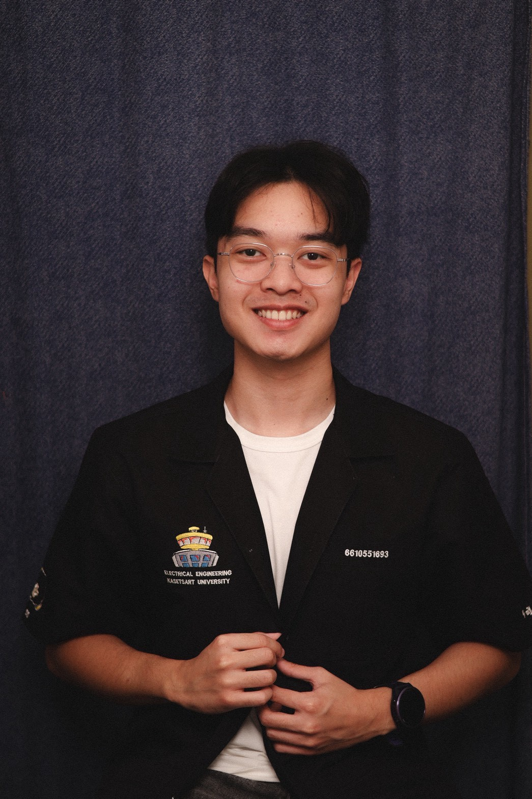

Nat Sangarunsiri

Summary
I'm an Electrical engineering student who interests in IT and shifting into the world of Technology. Although I'm still naive in these sections of careers but I'm fully committed to do what I desrire.
Education
- Bachelor of Electrical Engineering - Kasetsart University (2023-2027)
Work Experience

- Test Engineer Internship at Hitachi Energy(Thailand), Transformer Unit
April 2026 - June 2026
- Data Analysis: Collect and analyse electrical parameters to evaluate transformer performance.
- Test Optimization: Analyse Lightning Impulse Tests to improve testing time and accuracy.
- Circuit Simulation: Adjust impulse generator circuit parameters, including front and tail resistors, inductors, and capacitors.
- Waveform Compliance: Achieve target waveform times of 1.2 μs (front time) and 50 μs (tail time) through circuit calculations and parameter tuning.
Skills
- Autocad: ⭐⭐⭐
- Python: ⭐⭐⭐
- SQL: ⭐⭐⭐
- English: ⭐⭐⭐⭐
- Microsoft Office: ⭐⭐⭐⭐
Awards and Certifications
- Toeic score of 900/990, listening 495/495, Reading 405/495 (Nov 2026)
- IELTS score of 5.5 band (2021)
- Delta Electronics Automation Training Certificate
- Western Digital Automation Training Certificate
Other